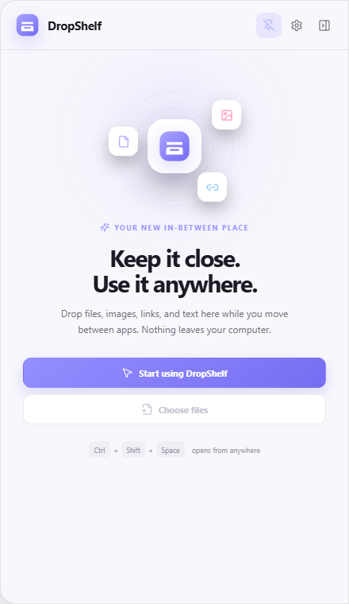
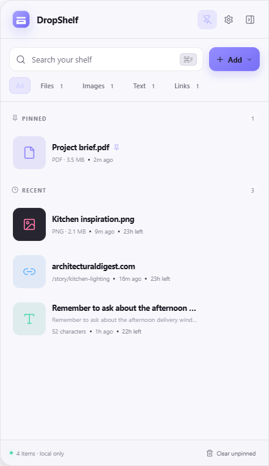
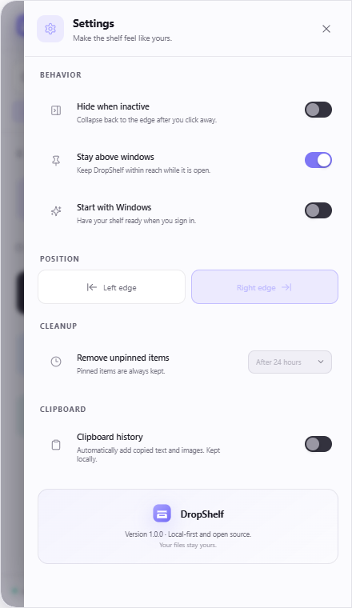

01
Drag in. Drag out.
Drop files and folders onto the screen edge, then drag them into email, messages, forms, or another folder using native desktop behavior.
DropShelf gives temporary files, images, links, and text a calm place to wait while you move between apps.


Built around the moments between finding something and using it.
Drop files and folders onto the screen edge, then drag them into email, messages, forms, or another folder using native desktop behavior.
Search titles, text, links, and paths. Filter by content type when the shelf gets busy.
Let unpinned items expire after an hour, day, or week. Removing them never touches the original file.
Use the edge handle, tray icon, or one global keyboard shortcut from anywhere.
DropShelf has no backend, analytics, tracking pixel, or account system. It stores a small readable state file on your computer and references the files you explicitly add.
Read the security model →Touch the edge handle or use the shortcut.
Place anything you will need in a moment.
Drag, copy, open, or reveal it from any app.

Download DropShelf and keep your desktop workflow moving.